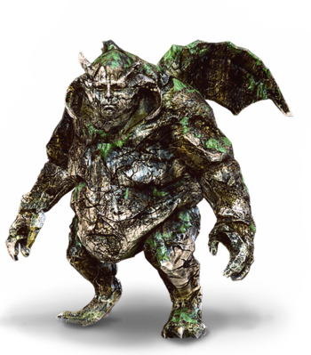
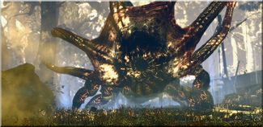

Potwory na świecie pojawiły się po koniunkcji sfer, stając się dużo większym zagrożeniem niż wilki czy niedźwiedzie. Ich rodzajów było tak wiele, że prawdopodobnie nikt nigdy nie spisze ich wszystkich. To właśnie do walki z nimi stworzono wiedźminów, którzy uczyli się o nich, czytając bestiariusze. Oto wycinek jednego z nich.
Arachnomorf
Potwór przypominający wielkiego pająka. Polują na mniejsze zwierzęta, ale arachnomorf olbrzymi jest w stanie pożreć nawet konia a zdarza się że atakują i ludzi. Szarżują swymi żuwaczkami, którymi także plotą pajęczynę a następnie celują nią w przeciwnika i plują nia. Są podatne na znak Aksji oraz olej przeciw insektom.
Barghest
Barghest – upiór przybierający postać demonicznego ogara. Zwykle przywoływane przez zbrodnicze i grzeszne występki lokalnej społeczności. Atakują w nocy w niewielkich stadach nie mając litości dla nikogo. Czasem sforze barghestów przewodzi najpotężniejsza Bestia.
Grupa barghestów stara się otoczyć ofiarę i atakuje ze wszystkich stron. Są podatne na znak Aksji oraz Yrden.
Bruxa
Wampir odznaczający się rozwiniętą świadomością oraz inteligencją. Nie obawia się światła słonecznego, potrafi powalić przeciwnika za pomocą fali dźwiękowej. Przed falą dźwiękową można się ochronić znakiem Quen, choć nie gwarantuje to stuprocentowej skuteczności. Posiada długie, ostro zakończone kły. Atakuje zarówno w noce jak i we dnie. Występuje pod postacią urodziwej kobiety, przez co często można ją pomylić z rusałką lub najadą. Posiada zdolność zauroczenia oraz telepatii, lecz aby uzyskać władzę nad daną istotą musi regularnie wysysać z niej krew. Ma również możliwość polimorfii w czarnego ptaka lub nietoperza. Podczas walki stara się używać głównie swoich umiejętności, wydając głośne, obezwładniające piski. Po wypiciu krwi z ofiary ma w zwyczaju śpiewać wysokim tonem. Przejawia sympatię do wszelkiego rodzaju ptactwa.
Jest podatna na znak Igni, olej przeciw wampirom oraz oczywiście srebro.
Gargulec
Stworzenie humanoidalne, stworzone z kamienia i ożywione przez potężnego maga w celu strzeżenia jego sekretów. Z miejscem nad którym ma czuwać jest związane magicznymi runami. Aby je ostatecznie zniszczyć trzeba "zmazać" te runy.
Gargulce i golemy zostały wynalezione prawdopodobnie przez Vranów w Loc Muinne dawno temu do pomocy w ochronie miast i ich sekretów. Są długowieczne i do dziś pilnują miejsc pełnych tajemnic.
Gargulce są niezwykle odporne na ogień i broń stalową. Zranić je można silnymi ciosami srebrnego miecza, ale nie warto też zapominać o tarczy ochronnej (np: Znak Quen).

Harpia
Drapieżny ptak, o twarzy kobiety. Zamieszkuje głównie tereny górzyste. Magiczne, latające potwory wielkości ludzi, o kobiecych głowach i tyłowiu, a skrzydłach i nogach sępa. Choć humanoidalne, nie mają więcej rozumu niż złośliwe ptaszyska. Straszliwie cuchną, moga też przenosić choroby. Atakują stadami, obalając ofiary uderzeniami skrzydeł i rozszarpując mocnymi szponami. Zamieszkują krainy Południa. Skuteczne przeciw nim są oleje przeciw hybrydom oraz znak Aard.
Kejran
Przez miejscowych zwany także Staruchem - wodny potwór, rzędu amphipoda, gromady wielkoszczęk, rodziny hyphydridae. Z wyglądu przypominający żagnicę. Został stworzony przez czarodzieja nie wymienionego z imienia, jednak z zapisków w dzienniku pokładowym statku który stoczył zwycięską potyczkę z Daerdin i go zatopił, podejrzenie pada na czarownika Oswena.
Skutecznym sposobem na jego pokonanie okazało się dla Geralta łapanie jego macek w znak Yrden oraz ich odcinanie, a także sporzystanie z pomocy czarodziejki.

Leszy
Leszy to potwór zamieszkujący stare lasy. Żyje samotnie i broni swego terytorium przed intruzami. Młode osobniki w swoich lasach budują totemy, których strzegą przed zniszczeniem. Zniszczenie któregoś z totemów wiąże się ze zwabieniem potwora do niego. Dzięki swojej magii kontroluje zwierzęta i rośliny, żyjące na jego terenie. Jest trudny do wytropienia z powodu dobrze ukrytych w gęstym lesie totemów, które są chronione przez pobliskie zwierzęta. Jest wrażliwy na ogień, a więc w walce z nim skuteczny jest znak Igni.
Nekker
Mały, leśny potwór żyjący w stadach. Atakuje w grupach, okrążając i rozszarpując swoje ofiary. Nekkery różnią się od siebie barwami, co może świadczyć o dymorfizmie płciowym. Żyją pod ziemią i dzielą się na szczepy. Ich gniazda wyglądają jak "kretowiny" usłane kośćmi. Szczepom podczas wojny przewodzą wodzowie, którzy są więksi i mają twarz pomalowaną kolorową glinką. Ich siedliska można wysadzić petardą zwaną kartaczem.
Południca
Według wierzeń słowiańskich złośliwy i morderczy demon, polujący na tych, którzy niebacznie w samo południe przebywali w polu. Zabijał dorosłych (np. kosiarzy czy oraczy pracujących w pełnym słońcu) oraz porywał dzieci bawiące się na skraju pola. Niekiedy zadowalał się pozbawieniem ofiary na jakiś czas przytomności lub zesłaniem potężnego bólu głowy. Przedstawiano go pod postacią odzianej na biało kobiety o surowej bladej twarzy.
Jeśli w bezwietrzny dzień łany zboża nagle zaczynały falować to było jasne, że południca jest tuż tuż. Szczególnie lubiła przebywać wśród łanów łubinu. Nie było przeciw niej obrony – należało po prostu w okolicy południa unikać przebywania na polu, a już szczególnie drzemki na polu. Śpiący był bowiem szczególnie pożądaną ofiarą. Południca nie lubiła cienia, więc dobrze było przesiedzieć południe w cieniu drzew – tam demon nie miał dostępu.
Jest podatna na znak Yrden oraz olej przeciw upiorom.
Smok
Smok – potwór latający, reprezentujący siły Chaosu. Wielu ludzi uważa je za największego wroga rasy ludzkiej. Jest niezwykle inteligenty. Praktycznie nie posiada naturalnych wrogów nie licząc człowieka. Wokół smoków krąży wiele legend, jednak rzeczą, która najbardziej popycha ludzi do polowań na smoki, są gromadzone przez nie skarby. W dalekiej Zerrikanii składa się ofiary przed podobizną smoka.
Stworzono pewien podział, który określa smoki zielone, czerwone oraz czarne jako Smoki właściwe. Smoki stanowią również źródło wielu towarów, dlatego też atakowane są ze względu na łzy i zęby (do wyrobu czarodziejskich leków i eliksirów), krew (dodawaną do kosmetyków). Ogon smoka stanowi w niektórych okolicach prawdziwy przysmak. Nienawiść ludzi do tych stworzeń wynika z prostej przyczyny - wielu ma problem z odróżnieniem smoka od widłogona, czy innych stworzeń latających. Innym powodem nienawiści do smoków jest to, że są w stanie zasiać ogromną pożogę w wąskich uliczkach miast zionąc ogniem lub pożerając bydło na pastwiskach.
Mimo informacji o smokach w bestiariuszu, wiedźmini na nie nie polują.
Utopiec
Człowiek, który utopił się i pod wpływem magii zamienił się w bezmyślne stworzenie gardzące wszystkim, co żywe.
Żyją na terenach w pobliżu zbiorników słodkowodnych, takich jak rzeki, jeziora, stawy czy bagna. Są wszystkożerne, jednak posilają się głównie tym, co znajdą w pobliżu wody. Atakują i pożerają również ludzi.
Są to sprytne i dość inteligentne potwory. Ich taktyka walki polega na przyczajaniu się pod powierzchnią wody i łapaniu ofiar z zaskoczenia. Utopce są dość odporne na krwawienie i większość trucizn, za to jako stworzenia pokoniunkcyjne, są wrażliwe na srebro. Ich wodny tryb życia i budowa ciała uzależniona od wody sprawiają, iż stwory podatne są na ogień.
Z ciał utopców można zdobić składniki alchemiczne, takie jak kwas Ginatzy, mózg czy trupi jad. Ponadto, za trofeum z utopca - mianowicie jego głowę - można odebrać niezłą nagrodę.